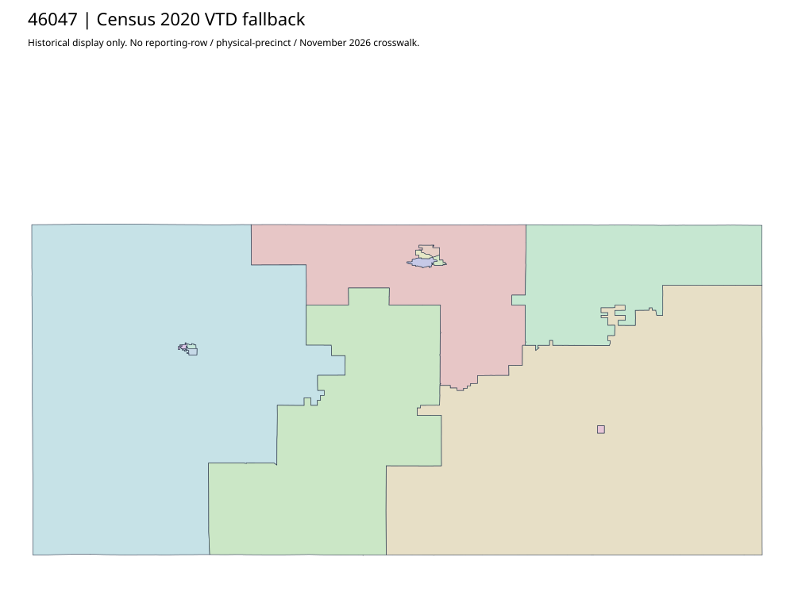

304 ordered indexFall River | 46047
Official elections parent links acquired complete county, Edgemont and Hot Springs precinct PDFs. Distinct municipal extents and2020/2022 upload paths are retained. No allocation of county/absentee observations to physical map pieces, current effective date, or vector topology inferred from paper maps.
4 priority / 9 full historical observations. Parent is a summary ancestor, not additive to leaves. No physical feature matches or current reporting crosswalk approved.
Acquired shared-parent assets
map-46047-009-network | complete1-page PDF; all-page contact sheet; complete page1; complete original gzip. Exact reconstruction: python -B scripts/reconstruct.py --id map-46047-009-network /private/tmp/map.pdf
map-46047-010-network | complete1-page PDF; all-page contact sheet; complete page1; complete original gzip. Exact reconstruction: python -B scripts/reconstruct.py --id map-46047-010-network /private/tmp/map.pdf
map-46047-011-network | complete1-page PDF; all-page contact sheet; complete page1; complete original gzip. Exact reconstruction: python -B scripts/reconstruct.py --id map-46047-011-network /private/tmp/map.pdf
Census2020 fallback
13 native historical VTD features. Entire785-feature ZIP original retained once, all66 counties. Yankton has one countywide VTD. No current/reporting allocation. complete original gzip

Full binary/attribute/geometry QA
Observed authority/acquisition routes
Complete SOS authority fields including original blank/masked values: parent inventory. No contacts were sent.
Ordered full children
- JAC | 1188 source votes | priority
- EDA | 642 source votes | priority
- HS 1 | 502 source votes | priority
- HS 2 | 487 source votes | priority
- HS 4 | 427 source votes | remainder
- HS 3 | 412 source votes | remainder
- Oelrichs Area | 212 source votes | remainder
- CAS | 202 source votes | remainder
- BEA | 199 source votes | remainder